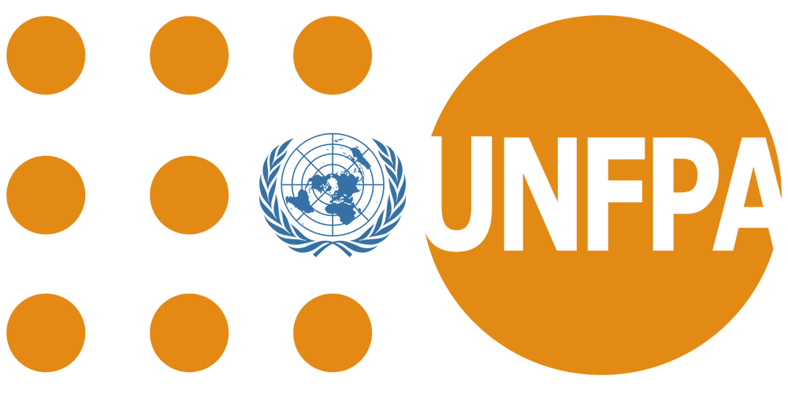
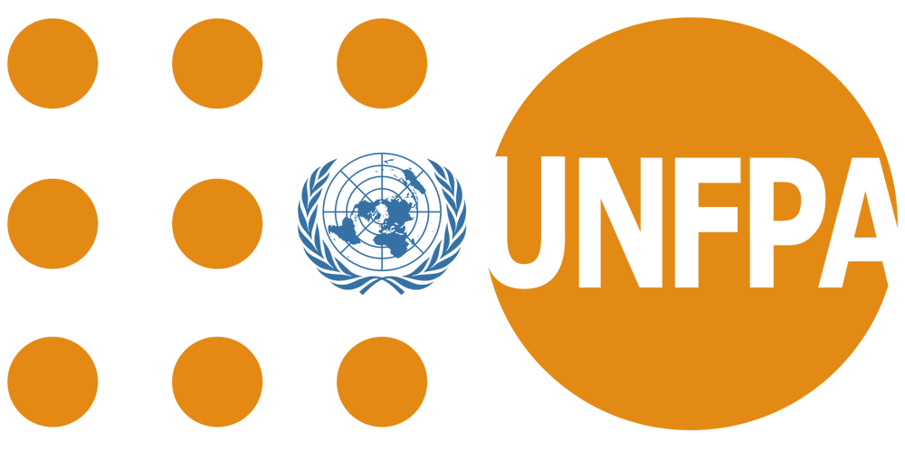

PUNJAB COMMISSION ON THE
STATUS OF WOMEN

OUR PARTNERS
 

Punjab Commission on the Status of Women | © 2019
PUNJAB COMMISSION ON THE
STATUS OF WOMEN

Empowerment of Female Youth
Providing ample access to education, employment and training opportunities is essential for empowering young women.
Guiding questions
What is share of young women that are not in education, employment or training in Punjab?
Why are young women not working, getting an education, enrolled in a training program?
To support evidence based policy making in this area, data on barriers that deter young women aged 15 -24 years to participate in education, employment or training was collected in ESW survey 2018. This data is presented in the first visualization.
The visualization contains three layers in a tree layout. The first layer titled ‘Youth NEET’ shows proportion of women aged 15-24 that are not in education, employment or training (NEET). The second layer breaks these into individual categories and indicates proportion of women not in each category. The third and final layer presents the proportion of different barriers that women not in each category reported. The percentages have been sorted in a decreasing order to identify more significant barriers at the top.
The circles in each layer are sized according to the proportions/ percentages. The circles in the third layer titles ‘barriers’ are also colored according to different categories each barrier falls in (such as family related, domestic responsibility related etc). These categories are listed in a legend at the bottom of the visualization.
The user can click on the nodes to expand or collapse the tree
Young women (15-24 years) not in education employment or training (NEET)
Guiding questions
What proportion of women with at least high school or graduation level education transition into the labor force?
What are the major barriers to working these women face?
What proportion are employed and which industries do they work in?
To investigate these questions, the second visualization, called a Sankey diagram delves deeper into labor force participation data on young women with at least high school (intermediate level) or a graduation degree.
The visualization has multiple layers from the left to right. Each layer has multiple labeled bars (called nodes) that are sized proportional to their percentage share. The bars in the layers are connected through links of various sizes that show the flow or relationship between nodes. For each link, the node to the left is the source and the node to the right is the target.
- The leftmost layer indicates the transition of women with at least the selected level of education to labor force. For example, in case of women aged 18-29 years who have at least intermediate level education, 30% made a transition to the labor force.
- The second layer shows the employed women among the ones in the labor force.
- The third layer shows the unemployed, women not in labor force and breaks down the employed by industry.
- The fourth layer shows the proportion of ‘major barriers to working’. The links between third and the fourth layer help investigate barriers to working reported by women across employment industry as well as for the unemployed and women not in labor force.
The visualization is interactive and hovering over the nodes and links will reveal underlying data to the reader. This visualization is best viewed on a laptop/ computer or a wide screen device
Transition of educated young women into the labor force